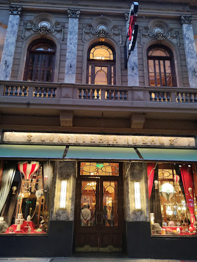
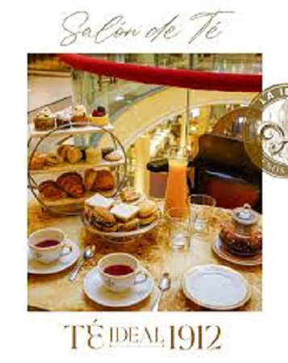
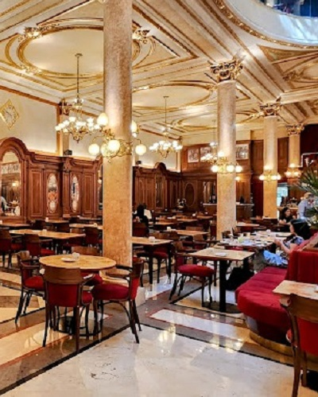
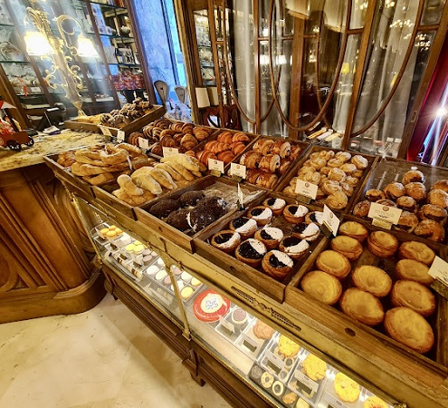

El Café más antiguo de Buenos Aires. Fundado en 1858, estilo francés.
En el café funcionó desde 1926"La Peña", que fomentó la protección de las artes y las letras hasta su desaparición en 1943, capitaneada por Benito Quinquela Martín.
Carlos Gardel, además de cantar dos veces en el café, fue durante un tiempo habitué del lugar.
La sala "La Bodega", en el subsuelo, es escenario de diferentes artistas de tango y jazz.
También se realizan presentaciones de libros y concursos de poesía. El café conserva la decoración de sus primeros años y la salida por la calle Rivadavia. Tiene además una biblioteca y, al fondo, mesas de billar y salones para jugar al dominó y a los dados.
Te esperamos todos los días de 8 a 21 hs.
Conocé el icónico Café Tortoni
Av. de Mayo 825, C1084 CABA. Mas Información
Confiteria Ideal




Facturas para llevar
Café, Restaurant y Bar Notable, fue fundada en 1912 por el inmigrante gallego Manuel Rosendo Fernández, restaurada recientemente.
La confitería propone una carta diaria de desayuno, almuerzo (con menú vegano incluido y para celíacos), el té de las 16 y brunch. También hay platos elaborados por el chef Gustavo Nari, que son opciones de la cena.
Reserve su lugar para nuestro Salón de Té en el primer piso, deléitese con nuestro clásico “Té Ideal 1912”. Lo esperamos todos los sábados y domingos en los horarios de 16.30 y 18.30 hs.
Situado en pleno corazón de la city porteña, desde el 28 de Septiembre de 1954,
“London City” fue refugio de poetas, artistas, políticos,
que transitaban desde el Palacio Municipal hasta el edificio del Consejo Deliberante,
periodistas que entraban y salían del vecino edificio del diario La Prensa y
de los porteños y turistas que paseaban y trabajaban a lo largo de la hermosa
Avenida de Mayo.
Avenida de Mayo 599 , Buenos Aires, Argentina
: +54 11 4342-9057